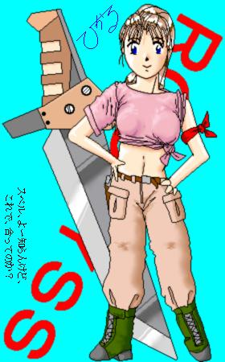
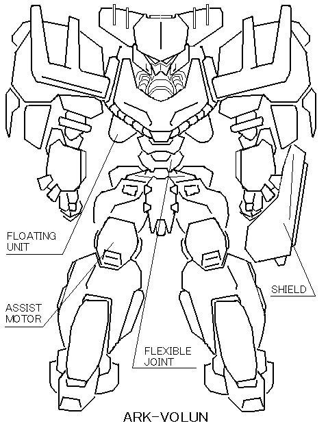

戻る
機甲戦記グランギア
作：八重洲二世 / 画：ことぶきひかる / メカ画：ＭＯＮＤＯ
プロローグ
二連惑星ノアとゼラ。
そして、二つの惑星の周囲を巡る四つの衛星。
六つの世界に住む人々は、常に大小の戦争を繰り返してきた。
戦闘の主役は、“トルーパー・マシン”と呼ばれる多目的歩行兵器だった。
より高性能なトルーパー・マシンとその操縦者をより多く保有した側が、戦いの勝利者となった。
戦いの勝利者は、秩序という名の鎖で世界をひとつにまとめあげる。
だが、その鎖は、ゆっくりと、そして確実に腐蝕する。
今また、しばし保たれていたひとつの秩序が崩壊し、世界が新たな秩序を求めて鳴動しようとしていた。
ときに、アルテナ星暦７９９年。
惑星ノアの連邦政府に対して、惑星ゼラが独立を宣言したことから、星系全土に混乱は一気に拡がった。
各地で軍事クーデターが頻発し、連邦政府の威信は日増しに低下していった。
誰もが戦乱の世の訪れを感じていた。
だが、そんな時代にこそ、己の夢を求めて生き抜いた若者達がいた。
物語は、衛星イリアの辺境地区から始まる……
［主要キャラ紹介］
リュー・ゼラン
黒髪の美少年。当年とって１５歳。女のように綺麗な顔をしている。が、その実、性格はかなりえげつない。その上、女に見境がなかったりする。現在はフレイとコンビを組んで、賞金首のお尋ね者を狩るハンター稼業に精を出している。特技はメカニックの扱い全般。ちなみに数百年前に星系を支配していたゼラン王家の末裔にあたるのだが、本人にその自覚があるのかないのか、よく分からない。亡き父から譲り受けた白銀のトルーパー・マシンは、かつてゼラン王家の専用機として３機だけ造られた“グランギア”というマシンである。
フレイ・マロール
リューとコンビを組む少年。金髪で、長身、二枚目だが、いつも少し斜に構えたところがある。こちらもリューと同じく女好きだが、ストレートに女に飛びついていくリューとは違い、クールに女を口説き落とすのが好きなタイプ。フレイの父は郷土の名士で、そのためフレイは何不自由なく育ち、連邦アカデミー留学生というエリート街道を進んでいた。だが、何を思ったか、あるときリューと意気投合して家を出てしまった。フレイの乗るマシンは、連邦正規軍の横流し品をリューが改造した“バイアロン”。別にこれといったいわくのあるマシンではない。だが、マシンを操るフレイの腕は天才的である。フレイは、いかなるマシンでも一瞬で乗りこなしてしまう。
ロディス・グレア
女王の治めていた衛星ウォールーンで貴族の家に生まれ、弱冠１７歳にして、ウォールーン騎士団の中隊長にまで出世した。ウォールーンと連邦との戦役で、勇将としてその名は周辺衛星にも響きわたった。が、結局ウォールーンの首都は陥落し、ロディスは王家の次女ミラ姫を守って落ちのびることになる。執拗な追撃に、仲間は次々と倒れ、ついにミラ姫を守る者はロディス一人になってしまう。やがて二人は追いつめられ、ロディスはミラ姫をかばって致命傷を負ってしまう。ミラ姫は自分の命を犠牲にしてロディスを救うことを決意する。それは、思考移植によってロディスと自分の意識を交換することだった。ミラ姫の体に意識を移されたロディスは、なんとか追っ手を撃退することに成功する。だがそのときには姫の意識が移っていたロディス本来の肉体は息絶えていた。ロディスは失意のあまりあてのない放浪を続けた。そして、あるとき衛星イリアの辺境地区でたまたま盗賊団をたたきのめしたことがきっかけで盗賊たちの首領に祭り上げられてしまう。盗賊としての暮らしが意外と肌に合ったロディスは、そのまま彼らの「お頭」として現在にいたっている。ちなみに好きなものは酒。軍人時代から、酒癖の悪さにも定評があった。
第１章
一台のローダーが、砂塵を巻き上げて砂漠を横切っていた。
数百年前の環境改造の失敗によって、衛星イリアは表面積の３／４が砂漠化している。
ローダーは民間用で、車体のあちこちが錆で赤茶けた色になった、廃車寸前の代物である。
その運転席には、二人の少年が陣取っている。
二人とも年の頃は、一五、六歳ほどだろうか。片方は黒髪、もう片方は金髪の少年。
黒髪の方は、のんきに居眠りをしている。
「おい、リュー。本当にこっちでいいのか?!」
ハンドルを握っている金髪の少年が、怒鳴った。
リューと呼ばれた少年は、眠そうに目をこすりながら欠伸をした。
「間違いないって」
「リュー、お前、このあいだもそう言ってガセネタ掴まされてきたろうが！」
「そんな昔のことは忘れたよ」
「都合良く忘れるな！」
「だいじょうぶだって。この先には大きな村は一つしかないんだから。盗賊団が向かうとしたらそこしかないよ」
「そう願うぜ、まったく……」
二人の少年は、賞金稼ぎなのである。
イリアの衛星総督府は最近、辺境地区の治安対策として賞金首制度を導入していた。
要するに、辺境地区までは正規の治安部隊の手が回らなくなっていたのである。
軍から流出した旧式のトルーパー・マシンに乗り、盗賊を狩るハンターの仕事は、成功すればそれなりの報酬が約束された。
この二人組の少年も、そんな報酬をあてにして、ローダーで気ままな旅を続けているのである。
黒髪の少年はリュー。
どちらかといえば、あどけない顔立ちで、一見すると女の子と見間違えそうな美少年である。
金髪の少年はフレイ。
リューとは対照的に、大人びた表情で長身の少年である。こちらも整った顔立ちをしているが、美少年というよりは「二枚目」というタイプで、こざっぱりとした身だしなみがいかにもプレイボーイ風である。
「ほら、村が見えてきた」
リューは前方を指した。
地平線のあたりに半透明のドームが出現していた。
オアシスを中心にドームで囲われた村が、砂漠地帯の各所に点在しているのである。
「どうやら、当たりのようだな」
と、フレイ。
近づくにつれ、ドームの一部が破壊されている様子がはっきりしてきた。盗賊に無理矢理ドームを突破されたのに違いない。
「ボクの言った通りじゃない」
「はいはい。えらいよ、お前さんは」
「いやみっぽいよ。言い方が」
「いいから、そろそろトルーパー起動しとけよ」
「そうだね。聞いた話じゃ連中、なかなか手強いらしいよ。割と名のあるハンターがいままでに何人か返り討ちにあってるって」
「知ってるよ。通称“片目の死神ドーマ”だろ？ 正規軍くずれだとかいう」
「そうそう。そいつが強いらしいね。…ただね、ドーマってナンバー２なんだよね。噂じゃ、盗賊団のボスもトルーパー乗りで、滅多に表には現れないんだけど、そいつの腕はドーマ以上だとか」
「へっ、知ったこっちゃねぇな。まさかその話聞いてビビッたなんて言うんじゃないだろうな、ええ？」
それを聞いて、クスッ、とリューは笑った。
「……まさか」
☆ ☆ ☆
「この世は虚しいよな……」
砂よけのフードを目深にかぶったままの人物はそう呟くと、杯をあおった。
「もう酔っぱらったんですかい、お頭」
隻眼の巨漢がフードの人物に向かって言った。
フードの人物と、隻眼の男は卓をはさんで差し向かいに座っている。
そこは酒場だった。
ただし、二人以外に客の姿はない。
カウンターの奥では、酒場の主人が青ざめた顔で機械人形のようにひたすらグラスを磨いていた。
「酔ったわけじゃねぇよ」
フードの人物は、空の杯を突き出した。
隻眼の男がボトルを逆さにして乱暴に酒をついだ。
そこへ、男が数人かけこんできた。
「お頭ァ、あらかた金目のモンはぶんどってきたぜ」
「見た目がマシな女もかっさらってきやした」
「早ぇとこお頭にゃ俺らの取り分決めてもらわねーと」
男達は口々にまくした。
彼らは、いまでは珍しくもない盗賊団なのである。
最近の政情不安が原因で職を失う者が大量に出ていた。食い詰め者が寄り集まれば、自然と盗賊団を形成する。
その集団の中で腕っぷしの強い者が首領に祭り上げられ、集団を率いるようになる。また、盗賊に荒らされた村の者は、生きていくために、次は自らが盗賊となって他の村を狙うようになることもある。そうやって無数の盗賊団が生まれていた。
「床板はちゃんとひっぺがしたか？」
隻眼の男は、手下どもに向かって言った。
「最近は連中も知恵がついて、本当に大事にしてるモンはそういうとこに隠してるもんだ」
「うひゃあ、ドーマの兄貴にゃかなわねぇや。ういっす、もう一度回ってきやす」
「おう、そうしろ」
男たちはどやどやと外へ出ていった。
「ったく、奴ら、なっちゃいねぇ。なあ、お頭よ」
隻眼の巨漢、ドーマは同意を求めて、言った。
だが、フードの人物は無言で酒をのむだけだった。
見る間に杯が干される。
「おっと、さすがにいい飲みっぷりだ、お頭」
ドーマは、酒をつごうとボトルを持ち上げた。
そのボトルをひったくり、フードの人物はボトルに直接口をつけて酒をのんだ。
「……ぷはっ」
しばらくして、卓上に、すっかり軽くなったボトルがごろりと転がった。
フードの人物が口をぬぐう。
「虚しいよな、形あるものはいつかは滅びるんだからよ」
「お頭…ほんとに酔っぱらってねぇんですかい？」
「うるせぇ！ オレの哲学タイムを邪魔するな」
「そんな安っぽい哲学なんか置いといて、今回の収穫でも見にいきやしょうぜ」
「ん……そうだな……」
そのとき。
再び、手下どもが駆け込んできた。
「なんだ、おめぇら、騒々しいな」
「ドーマの兄貴！ 賞金稼ぎだ！ トルーパーを持ってやがる！」
「馬鹿野郎!! そのくらいで浮き足立つんじゃねえ!!」
「んなこと言ってもよぉ!!」
「あー、ったく情けねえ。待ってろ、へなちょこ賞金稼ぎごとき、俺様が軽く蹴散らしてやる」
そう言うとドーマはすっくと立ち上がった。立ち上がると巨漢ぶりがさらに際だつ。ドーマと比べると、「お頭」と呼ばれているフードの人物は小さな子供のように見える。
「ちぅわけで、お頭、ちょっくら暴れてくらぁ」
「……ああ、好きにしろ。オレは面倒だから出ないぜ」
「へっ、もとより承知よ。お頭の手を煩わせるまでもねえ」
ドーマは大股で歩いていった。
手下の男たちがとたんに威勢を取り戻す。
「賞金稼ぎの馬鹿ども、返り討ちだぜ」
「なんたって、連邦正規軍でトルーパー乗りをやってたドーマ兄貴だ。そこらの中古トルーパーなんざ、つまんでポイよ」
盛り上がる男たちをよそに、フードの人物はつまらなそうに、カウンターの店主に向かってボトルの追加を合図していた。
☆ ☆ ☆
盗賊の乗るウォーカーが機関銃を乱射して一機のトルーパーに迫った。
白い装甲を持ったトルーパーだった。
軍の制式型ではない。
完全にカスタムメイドのトルーパーである。二本の腕と足を持つ人型の機体は、白い巨人といった風情を持つ。装甲についた無数の細かい傷から、このトルーパーがひどく古い代物であることがうかがえる。だが、整備は行き届いているらしく、その動きにぎこちなさは無い。
機関銃の掃射程度では、よほど至近距離から急所を狙ったのではない限り、トルーパーの装甲の前には効き目が無い。
白いトルーパーは、腕で薙ぎ払うようにしてウォーカーを叩きつぶした。
武装しているとはいえ、もともと、民生用の作業機であるウォーカーでは、トルーパーの相手になるものではない。
「悪いね。でも、そんなガラクタで向かってくるからだよ」
トルーパーのコクピット内で、リューはぺろりと舌を出してみせた。
次の瞬間、リューの側頭部にチリチリするような軽い痛みがはしった。
トルーパーを操縦するためのメイン・インターフェースとなっている精神干渉フィールドを通じて、緊急回避を要請するシグナルが送り込まれてきたのだ。
機体を後方に飛び退かせる。
直後、ナパーム弾がそれまで機体のあった場所に降り注いだ。巨大な火柱が吹き上がり、近くの民家に飛び火した。
通信回線に割り込みが入る。
『よくかわしたな、ハンター』
攻撃をしかけてきたのは、連邦正規軍の制式トルーパー・マシン“ゾラ３”だった。サメのような鋭い流線型のフォルムをした機体である。
「へえ。あなたが、死神のドーマさん？」
のんびりした口調でリューは応じた。
『その通り。すぐにテメェも地獄に案内してやるぜ』
「うーん、そのお約束なセリフがス・テ・キ」
『……俺様を馬鹿にした野郎が五分以上生き延びたことはねぇぜ!!』
言うが早いか、ドーマの操るゾラ３型は、ハイプラズマ・ブレードを構え、一気に間合いを詰めてきた。
「あららー、さすがに良い動きしてるのね……」
ゾラ−３が横一文字にブレードをふるった。
胴体を両断される寸前、リューの乗るトルーパーはぎりぎりのタイミングで攻撃をかわした。
『かわした?!』
「かわしましたよ」
『……なるほど。見かけによらず、それなりの腕はあるようだ』
「そりゃ、どうも」
『だがなァ──』
ドーマは、再びブレードで攻撃してきた。
続けざまの攻撃を防ぐため、リューもまた白いトルーパーの左腕に装備されていたブレードを引き抜いた。
ハイプラズマ・ブレードは、強力な電磁場によって剣の形に超高温のプラズマ粒子を発生させる武器である。
ブレードとブレードがうち合わされ、バチバチとエネルギーのせめぎあう音がした。
つばぜり合いは、マシン同士の力比べを意味する。
『ゾラ３のパワーに、そこらの野良トルーパーがどこまで太刀打ちできるかな?!』
その言葉の通り、じりじりとゾラ３のブレードが迫ってきていた。
マシンの最大出力において、ゾラ３が勝っているのだ。
『覚悟しな、ハンター』
早くも勝ち誇った声をあげるドーマに、リューはにやりと笑ってみせた。
「それは、どうかな？」
『なに?!』
いつの間にか、ゾラ３の背後にもう一機のトルーパーが立っていた。
新手のトルーパーは、ブレードを一閃させた。
濁った機械油の尾を引いて、ゾラ３の頭部が飛ぶ。
『一丁あがりってか』
通信モニターに映ったのは、フレイだった。
「遅いよ、フレイ」
『お前の整備がいいかげんなんだよ、リュー。起動プロセスで五回もトラブったぞ』
「ボクのせいにしないでよね。いつも整備くらい自分でやれって言ってるじゃない」
フレイのマシンは、ドーマのトルーパーと面影に共通点がある。
ゾラ３の一世代前の型である、ゾラ２をベースに改造を加えた機体だ。フレイは、“バイアロン”と呼んでいる。
 フレイは、機能停止したゾラ３の胴体装甲にブレードで穴を開けた。そのまま装甲板をねじ曲げ、機体内部に手を突っ込む。
フレイは、機能停止したゾラ３の胴体装甲にブレードで穴を開けた。そのまま装甲板をねじ曲げ、機体内部に手を突っ込む。
しばらくして引き抜かれたバイアロンの手には、コクピットから引きずり出されたドーマが握られていた。
『これが、片目の死神ドーマか。たしか、賞金は、３０００ラーダだったな』
「つぶさないようにね、フレイ。死んじゃうと、賞金額が４割も引かれちゃうんだからね」
心配そうに、リューは言った。
☆ ☆ ☆
「お頭!!」
「たいへんだァ、お頭」
息せき切って走り込んできた手下に向かって、フードの人物は空のボトルを投げつけた。
「うるせぇぞ。人が酒をのみながら、しんみりと想い出に浸ってるのが分からねえか？」
「……うぃす。分かりやせんでした」
「まあいい。で、なんの用だ」
「へえ！ それが…ドーマの兄貴がハンターにやられちまったんでさァ」
「ドーマが？」
「やつら、二機もトルーパー持ってやがったんで…。どうしやす？ ここは、ずらかりますか？」
パリーーーン!!
ボトルで頭を殴られた手下は、床の上にのびた。
「…馬鹿言いやがれ。なんで、逃げなきゃいけないんだ。…ドーマをあっさりと倒す奴らか。久々に少しは楽しめそうだ」
そう言いながら、砂避けのフードとマントに手をかけ、一気に脱ぎ捨てると、その下から小柄な少女の姿が現れた。
美少女だった。
衛星イリアに住む人間にしては珍しく、透き通るように白い肌をしている。少しアルコールが回っているのか、頬がほんのりと朱を帯びている。
柔らかい栗色をした髪は、ポニーテールにしてある。
瞳の色は、澄んだ湖のように綺麗なブルー。
フードとマントの下に着ていた服は、胸の下で裾を結んだシャツと、ラフなスラックスという動きやすそうな組み合わせである。
「おい、オレのアークヴォルンを起動させておけ」
美少女は、手下に向かって細い顎をしゃくってみせた。
「へ、へえ！ すぐに！」
命令された、手下はすっ飛んでいった。
コキ、パキッ
美少女は不敵な笑みを浮かべ、指を鳴らした。
しばらくして、外の通りから低い振動音が聞こえてきた。
手下の男たちが、彼女のトルーパー・マシンをウォーカーで引っ張って来たのだ。

「おやじ。オレが戻ってくるまでに、とっておきの酒を用意しておけよ」
言い置いて少女は酒場の出口をくぐった。
半透明のドームを通して、それでもなお強烈な陽光が照りつけている。
少女が“アークヴォルン”と名を呼んだトルーパーは、逆光の中で通常のトルーパーよりも一回り大きいそのシルエットをそびえさせていた。
片膝をついた姿勢でもゾラ３と同程度の高さがある。特殊な訓練によって心身を鍛えない限り、乗りこなすことの出来ないとされる、重装型のトルーパーだった。
アクティブ・タラップに体を預け、少女はコクピットに乗り込んだ。
搭乗ハッチが閉じられ、コクピット内に精神干渉フィールドが張り巡らされる。
探知システムは早速、二機のトルーパーの熱源反応を捉えた。
「待ってろよ、ハンター。このロディス・グレア様がひねり潰してやるからな」
アークヴォルンが立ち上がった。
重装型トルーパーとは思われない滑るような動きでアークヴォルンは移動を開始した。
間もなく、リューとフレイのトルーパーが見えてくる。
アークヴォルンの右手にハイプラズマ・ブレードが出現した。
リューとフレイはアークヴォルンに気づいたと見え、同時に振り向いた。
「お前らだな、ドーマを倒したってのは」
少女──ロディス・グレアは、呼びかけた。
『そうだ。ほれ、この通り』
フレイがドーマを掴んだままバイアロンの手を高く上げてみせた。
『死神だかなんだか知らないけど、俺の敵じゃなかったぜ？』
フレイは余裕たっぷりに言った。
『あ、そういう言い方すると、フレイ一人で倒したみたいじゃないか』
リューが不服そうに割って入った。
『みたいも何も、倒したのは俺だろうが』
『それはボクがそいつの気を引きつけてからでしょ。手柄を独り占めしようとしないでよね！』
「やかましい！ 仲間割れなら、あの世でやるんだな」
二人のやりとりを聞いていた少女はしびれを切らせたように、突進した。
アークヴォルンの体当たりを避け、フレイはさっさと後方に下がった。
「逃げるか?!」
『まずはこの賞金首をコンテナに放り込んでこなきゃいけないんでね。あんたの相手は後でしてやるよ。それまでは、リューと遊んでるんだな』
言い残して、フレイはさっさと引き揚げていってしまった。
後に残されたリューが叫ぶ。
『ちょっと待ってよ、フレイ。こいつ、相当強そうだよ？ ボク一人で相手するの?!』
応えたのは、少女だった。
「そのようだ。心配するな、相棒もすぐ後を追わせてやる！」
目標を変え、少女はリューのトルーパーに躍りかかった。
ブレードを繰り出す。
その切っ先を、リューは受け止めた。
一撃で仕留められなかった相手は久しぶりだ、と少女は思った。
『今度はこっちから行くよ!!』
リューのマシンは、ステップを踏むような素早い動作で横に回り込んできた。
死角を狙っている。
素早い反応で左アームに装備された防盾をかざし、攻撃を受け止める。
積層構造の防盾の半ばまで、ブレードがめりこんだ。
だが構わず少女は防盾をかざしたまま、飛び出した。
重装トルーパーであるアークヴォルンの体当たりは、それだけで相当の威力がある。
だが、敵もさるもので、それを予想していたか、ひらりと体当たりをかわすと、さらにブレードを打ち込んできた。
今度は頭部を狙った攻撃だった。
間一髪で再び防盾で受け止める。
リューの操る白いトルーパーの機動性能は、少女の予想以上だった。アークヴォルンは、重装型とはいえ機動性能においても第一級の実力を誇る。そのアークヴォルンと互角以上の性能だった。
「面白い。面白いぞ!!」
傷ついた盾を少女は捨て去った。
戦闘の高揚が少女の全身を駆け巡っていた。
久しく忘れていた感覚だった。
それは、少女がかつて、今とは異なる姿で戦場に身を置いていた頃は、常に経験していた感覚だった。
「ミラ姫の身体でも、こんなとき、熱く火照るんだな……」
ほんの一瞬、少女はかすかに戸惑ったような仕草で我が身を眺め下ろした。
だが、ほんの一瞬だった。
リューの白いトルーパーが隙をうかがうように、じりじりと間合いを詰めてきていた。
（次で、かたをつける）
敵は、マシンも操縦者もかなりのものだが、それでも自分の敵ではない。
少女はそう確信した。
マシンの出力を臨界まで上昇させる。
コクピット内に響く低い羽音のような機関駆動音が、一気に甲高い高周波と化した。
「その首、もらったぞ!!」
一声吠えて、少女はリューに襲いかかった。
白いトルーパーの首を一刀両断にせんと白熱したブレードをふるう。
リューもブレードを合わせてきたが、アークヴォルンの圧倒的なパワーを受けかね、リューのブレードははじき飛ばされた。
続けざまにブレードを叩き込む。
白いトルーパーは盾で防ごうとしたが、ブレードは盾ごと白いトルーパーの左アームを切断した。

とどめの一撃を加えようとした、そのとき。
『わっ、わっ、待った!!』
リューからの通信が入った。
『降参!! 降参するよ、もう。今、マシン降りるから!!』
白いトルーパーの心臓部を串刺しにする直前で、ぴたりと少女はブレードの動きを止めた。
そのまま油断無く、少女はモニターを凝視した。
ほどなくして、白いトルーパーの搭乗ハッチが口を開き、コクピットからリューが飛び降りてきた。
それを見届け、少女はブレードを引っ込めた。
リューは丸腰のまま両手を頭の後ろで組み、アークヴォルンの足元までやってきた。
そして、あまり悪びれた風もなく、言った。
「まいったね。おたく、何者？ そんだけの腕があれば正規軍でもエースになれるじゃない。…反則だよ、おたくみたいのが、こんな辺境でケチな盗賊やってるなんて」
戦闘システムに自動索敵を命じてから、少女はハッチを開いた。
眼下の少年と直接話してみたくなったのだ。
コクピットから少し体を乗り出し、地上を見下ろす。
少女とリューの目があった。
少女は、さきほどまで戦っていた相手が、一見戦闘とは縁遠そうな顔つきの美少年だったことを知った。
少年もまた、少し驚いた顔をしている。
リューが、ふぅん、と感心したような声をあげた。
「意外だなぁ。女の子だったんだ」
と、リュー。
アークヴォルンの通信回線は、音声に変調をかけてあったので、女とは気づかれていなかったのだ。
「あ、しかもよく見るとカワイイなー。ボクの好みのタイプだよ」
その言葉に、少女は見る間に顔を赤らめた。
「ば、ばかやろ、なにを突然言い出しやがる！」
「正直に思ったことを口に出したまでだけど？」
「あ、あのなァ。オレとお前はさっきまで戦ってて、それでお前は負けたんだぞ？ 言っとくが降参したからって命の保証をした覚えは、ないんだぞ？ もっと緊張したらどうなんだ」
「えー？ でも君ってさ、丸腰の相手には銃を向けられないタイプじゃない？」
「…………」
「騎士道精神ていうの？ 今どき珍しいよね、そういう古風なの」
「勝手に決めるな！ 丸腰だろうと、おかしな真似したら容赦しないぜ」
「ま、いいけど。……ねえねえそれより、君さあ、名前なんての？」
リューは馴れ馴れしく尋ねた。
「それはこっちのセリフだ。お前こそ、なんて名だ？ それと、その白いトルーパー。どこで手に入れた？」
「ボクはリュー。このトルーパー・マシンは、親父の形見。一応、先祖伝来の品らしいんだよね。…で、改めて、君は？」
「……ロディス・グレア」
「ロディスっていうの、へぇ。……あれ？ どっかで聞いたことある名前のような……。気のせいかな？」
「フン、気のせいだろ」
少女はなぜか自嘲するように言った。
「でも君、強いね。フレイとどっちが強いかなぁ？ いい勝負かもしんないなぁ」
「お前の相棒のことか、そのフレイってのは？」
「そうだよ。フレイもトルーパーでの戦闘は天才的だからね」
「面白い。奴が戻ってきたら、どっちが上か、すぐはっきりさせてやる」
「あのさ、ロディス。ものは相談なんだけどさ」
「なんだ？ 命乞いか？」
「ううん。ロディスさぁ、ケチな盗賊稼業なんて止めて、ボクらの仲間にならない？」
「盗賊もハンターも似たり寄ったりだろうが。今日ハンターだった奴も金に困れば明日は盗賊だ」
「違うよ。ボクとフレイは、今はハンターの仕事で食いつないでるけどね、ちゃんと将来の展望を持ってる。稼いだ賞金を元手に傭兵隊を組織するんだよ。こういう時勢だからね。引く手あまただよ。はっきり言って、こんな辺境のショボイ村を襲うよりもよっぽど実入りがいいと思うよ。ちょうど腕の立つ指揮官クラスの人間があと一人二人欲しいと思ってたんだけど、どう？」
リューの長広舌を聞いて、ロディスは馬鹿かという目をした。
「お前、自分の立場が分かってて言ってるのか？ お前は今、オレの捕虜なんだぞ」
「えー、悪い話じゃないと思うけどなぁ……。女隊長なんてカッコイイよ。ロディスなら顔もスタイルも文句ないし……うん、けっこう胸おっきい方でしょ。Ｃ？ それとも、もっと？」
ロディスは、いまさらのようにリューの視線が自分の全身に注がれていることに気づいた。
「こ、この変態野郎!!」
赤くなって叫びながら、大事なものをかばうようにロディスは両腕で胸のあたりを隠した。
「あ、新鮮な反応。なんか、そそるなぁ」
リューは嬉しそうに言う。
「くっ……こいつ、女みたいな顔して、とんでもねぇスケベ野郎だな！」
「フフン。ボクみたいに美少年だと、多少エッチでも許されちゃうんだよね」
ニッコリと笑顔を浮かべ、ぬけぬけとリューは言ってのけた。
ちょうどそこへ手下の盗賊が数人やってきた。
「へへっ、さすがお頭だ。楽勝でしたね」
「いよっ、お頭。今日も、色っぺーですぜ」
ロディスの姿を見上げて一人が言った。
ズゥゥゥン
トルーパー・マシンの脚が、その男の数ミリ脇に踏み降ろされた。
「ひぇぇぇぇッ!!」
「お前ら！ 無駄口きいてないで、とっととそいつをふんじばっておけ！」
ピリピリした声で、ロディスは怒鳴りつけた。
それを見てリューがつぶやく。
「あーあ、バカだね。顔が悪いくせに色目をつかうから」
「うるせえっ、余計なお世話だ！」
男たちはリューの両わきに腕を回した。
「お頭の命令だ。さあ、来い！」
男たちを無視して、リューはさらに呼びかけた。
「ねえ。さっきの話、真剣に考えてみてよ。ボクらと手を組んで、ひとやま当てようよ」
「フン。オレは自分より弱い奴と手を組むつもりはないぜ」
「そう？ じゃあ、ボクがロディスに勝てば問題ないわけね？」
「…お前、さっき負けたばかりだろうが」
「いいから約束してよ。ロディスがボクに負けたら、ボクらの仲間になるって」
「ああ、分かった、分かった。いつか、そんな機会があったら、またかかってきな。…もっともお前は、先のことより、今、自分の身を案じた方がいいと思うがな」
ロディスは顎をしゃくった。
手下たちがリューを引きずっていこうとする。
だが、リューは勢いよく指を鳴らした。
「やったね！ 商談成立！」
手下たちは、こいつおかしくなったか、と言わんばかりに顔を見合わせた。
リューはニヤリ、と不敵に微笑んだ。
☆ ☆ ☆
「来い、グランギア！」
リューは命じた。誰もいない空間に向かって。
いや。
そこには、リューの乗っていたトルーパー・マシンがあった。
マシンはリューの声に反応し、停止していたはずのシステムを再起動させた。
「バカな?! もう一人乗ってたのか?!」
ロディスが叫ぶ。
「まさか。乗ってたのはボク一人さ」
トルーパー・マシンは、ゆっくりと脚を踏み出した。
これが、リューの隠し持っていた切り札だった。
「ボクのマシンは特別でね。自分の意志を持ってるんだよ」
「そんなマシンが……」
「現にあるんだよね！ そしてグランギアはボクの思考を遠隔スキャンできる！」
「グラン…ギア……?!」
「チャ〜〜ンス!!」
リューの言葉と時を同じくして、白いトルーパー・マシンはロディスに向かって、左手を伸ばした。
アークヴォルンのハッチがそれを阻んだ。
ロディスがとっさにハッチの開閉スイッチを操作したのだ。
だが、ハッチが完全に閉ざされる前に、リューのマシンは左手をハッチの隙間にさし入れた。
マシンの右腕は肘関節から先を、さきほどの戦闘で切断されている。
左腕ひとつで、リューのマシンは、アークヴォルンのハッチをこじ開けようとした。
「一気に行け!! フルブースト・モード移行」
次の瞬間、居合わせた者たちは、トルーパー・マシンの背に巨大な翼が開かれるのを見た。
「これは……!!」
ロディスの驚愕の声が、漏れ出る。
マシンにはさらなる変化が訪れていた。
白かった装甲の色が、赤味を帯び、やがて溶鉱炉のように赤熱して輝きだした。
フルブースト・モード。それは、この機体の潜在能力を極限まで引き出した状態である。翼に見えるのは、通常時の数倍の長さにまで展開された排熱フィンだった。
ミシミシという音が響きわたり、分厚いハッチが無理矢理に引き剥がされていく。
ロディスはコクピットの中で、茫然とそれを見上げていた。
「グランギア……“暁の戦神”グランギアなのか……！」
真紅の光をまとったマシンを見上げ、ロディスはかすれた声でつぶやいた。
「知ってるの、グランギアを？」
リューは意外そうに言った。
トルーパー・マシン“グランギア”。
いまや、その名を知る者は決して多くはないはずだった。
まして、機体を見ただけで、それと分かる者は。
二百年以上前に、連邦政府との戦いに敗れて滅び去った王国があった。その戦争の最末期に、王家の専用機として開発され、たった三機のみが建造されたトルーパー・マシン、それがグランギアだった。
 「グランギアを知ってるなんてね。おいそれと素人さんが知ってるようなマシンじゃないんだけど。ロディスって、どういう経歴なのか気になるなぁ」
「グランギアを知ってるなんてね。おいそれと素人さんが知ってるようなマシンじゃないんだけど。ロディスって、どういう経歴なのか気になるなぁ」
「待て……ということは、まさか、お前、ゼランの……」
リューは、こくりと頷いた。
「ボクのフルネームはね、リューナファス・ゼラン」
「やはり、ゼラン王家の──!!」
「それはそれとして……これで、ボクの勝ちだね！」
リューの“グランギア”が、コクピットに手（マニピュレーター）をさしいれ、ロディスの体を掴んだ。
「ああっ、お頭がっ!!」
リューを掴まえていた男たちは、リューを放り出してマシンの足元に駆け寄った。だが、そうしたからといって、どうすることもできない。
男たちは、うろたえて、ただ成りゆきを見守るだけだった。
トルーパー・マシンの巨大な手が、もがくロディスの体をがっちりと押さえ込み、コクピットから引きずり出す。
「くそっ、この、放しやがれッ!!」
ロディスはしきりともがくが、マニピュレーターはびくともしない。
そのままロディスは空中に持ち上げられた。
「フフーン。これでボクの勝ちだね？ なにか文句ある、ロディス？」
「大ありだ、このやろっ！ 卑怯な手を使いやがって！」
足をバタつかせてロディスが喚く。
「勝てば官軍。手段はどうあれ、勝ちは勝ちだよーん」
ぺろっとリューは舌を出した。
「このガキ！」
「お頭を放しやがれ！」
盗賊たちはリューに向かって銃を抜いた。
だが。
「あれ？ そういうことすると、君らの大事な大事なお頭が、握りつぶされちゃうよ？」
可愛い顔に、妙に凄みのある笑いを浮かべてリューは脅した。
「お頭を人質に！」
「くそうっ、俺たちの、ラブリーお頭を人質にとられてちゃ、手が出せねえっ！」
盗賊たちは一斉に頭を抱えた。
「誰がラブリーお頭だ?!」
こんな状況でも耳ざとく聞きつけて、ロディスが怒鳴る。
☆ ☆ ☆
そのとき、リューは耳ざとくマシンの音を聞きつけた。
ドームの外から、フレイが戻ってきたのだ。
フレイのマシン、バイアロンが姿を現し、リューのそばまでやってきた。ハッチを開けてフレイが顔をのぞかせる。
「よっ、リュー。心配したぜ。俺が戻ってくるまでにやられてるんじゃないかってな」
「うそばっかり。ボクがやられそうになるまで待って、恩を売ろうとしてたでしょ」
「言いがかりはよせって。それより、盗賊どものボスは……おおっ、ホントかよ？ このカワイコちゃんがボスだったのか!?」
「ふ〜んだ、早いもの勝ちだもんね。この娘はボクんだよ」
「ちっ、失敗したぜ……」
フレイは悔しそうに舌を鳴らした。
「おいっ、何が『ボクんだよ』だ！ 勝手なこと言うな！」
喚くロディスだったが、リューは少しも動じない。
ググッとロディスを掴んだままグランギアが動いた。
片膝をついて低い姿勢になり、リューに向かってロディスを突き出すような格好をとる。
グランギアに掴まれたまま、ロディスがリューと向かい合うような位置に来る。
リューは、舌なめずりをした。兎を前にした狼のように。
ゆっくりと、歩み寄る。
ロディスは反射的に身を引こうとするが、果たせない。
「お、おい……」
ロディスがやや、ひきつった声をあげた。
「まったく、手こずらせてくれたもんだね。……一回や二回で済むと、思わないでよね」
「な、なんの回数だ！」
「さあね」
さらに接近する。
リューは身動きもままならないロディスに、手をのばした。
ロディスは、ハッとしたような顔をしたかと思うと、次の瞬間、歯を食いしばり、目を固くつぶった。
（ふうん。意外に純情なんだ……だったら、作戦変更かな？）
リューはそっと手をひっこめた。
しばらくして、ロディスがおそるおそる、目を開けた。
リューは、おじぎをするように身をかがめていた。
二人の顔が間近で向かい合う。
「えっ……？」
戸惑った表情のロディス。
リューは、ロディスの唇を奪った。いとも、あっさりと。
数秒後。
リューは、ロディスの顔をのぞき込みながら、言った。
「ごちそーさまでした」
ロディスはふるふると震えていた。
それは、リュー好みのリアクションだった。
「あ、涙ためてる。かわいー反応。いまどき、キスくらいで」
「なにがキスくらいだッ!!」
ロディスは叫んだ。
「お前、思いっきり舌入れてきただろっ！」
「えー、そんなの普通じゃん」
ロディスの抗議を、リューは軽く受け流した。
「ファーストキスが……男なんて……！」
そう言うと、ロディスはがっくりとうなだれた。
「？」
今の言葉からしてロディスはユリ系な娘なのだろうか。
リューは首を傾げた。
そこへフレイがマシンから降りてやってきた。
「相変わらず手が早いな、この好色魔人」
「なにさ、色ボケ大帝には言われたくね」
「誰が色ボケだ。そんなことより、こいつは、どうすんだ？ このままお上に突き出すか？」
「まさか」
リューは、ちっちっちっと舌を鳴らし、指を左右に振ってみせた。
「ロディスはボクらの仲間になってくれるってさ」
「……とても、そういう話をしてたようには見えんぞ」
リューとロディスを交互に見て、フレイは言った。
「約束したんだよ。ボクがロディスを負かしたら、ロディスが仲間になるって。ね？」
リューは小首をかしげて、ロディスに同意を求めた。
「………………ああ」
小さな声で、ロディスは認めた。
「ほらね？」
と、リュー。
「へーえ。ま、腕の良いトルーパー乗りが仲間になってくれるのは結構な話だな。その上、可愛い女の子とくれば、なおさら結構なことだ」
「でしょ？」
フレイは煙草をくわえ、火をつけた。
ゆっくりと煙を吐き出す。
「だが、そのマニピュレーターを外して、自由にしてやった途端に、ロディスちゃんの態度は一八〇度変化するんじゃないの？」
フレイは皮肉っぽい口調で言った。
「見くびるなよ！」
意外にも強い調子で言い放ったのは、ロディスだった。
リューとフレイは、同時に振り返ってロディスを見た。
ロディスは二人の視線を受け止め、やがて再び口を開いた。
「オレも男だ」
「女じゃん」
すかさずリューがツッコミを入れる。
「いいから、黙って聞け。オレも誇りにかけて、約束は守ってやる。あんな小汚い約束でもな。負けは、負けだ」
ロディスは言った。
「その誇りとは？」
フレイが尋ねる。
「……ウォールーンの騎士としての、誇りだ。ウォールーン騎士団ロディス・グレアとしての」
「そうか！ 思い出した！」
リューが手を叩く。
「ロディスって名前！ 聞き覚えがあるはずだ！ ウォールーン戦役で活躍した若き英雄、ロディス・グレア！」
「あのロディスか！」
思わずリューとフレイは顔を見合わせる。
女王の治めていた衛星ウォールーンが、連邦からの独立を求めて戦い、敗れたのは二年前のことだった。終始劣勢だったウォールーン側で唯一、連邦軍を苦しめたのが、ロディス・グレアというたった一五歳の少年が指揮をとる部隊だった。
「……だが、ロディス・グレアが女だったとは初めて聞いたぞ？」
フレイが顔をしかめる。
リューは、ロディスの胸を両手でむにむにと触ってみた。
「ぎゃっ!!」
やわらかさと張りをかねそなえた、絶妙の手応えがかえってくる。
「うん、この胸は天然物だね」
重々しく、リューは告げた。
「鑑定歴一〇年のお前が言うなら間違いないな」
「一〇年って、お前、ガキの頃からそういう鑑定してたのか!?」
ロディスは真っ赤な顔で怒鳴った。
「まあね。ちょっとオッパイにはうるさいよ、ボクは」
なぜか自慢げにリューは言った。
様子を見ていた盗賊の男たちが、
「う、羨ましい……お頭の豊満な胸を……」
と、ため息をつく。
ロディスは、大きく咳払いをした。
「これは、色々な事情があったんだよ」
「どんな？」
「その前にオレを放しやがれ！ こんな格好で、こみいった話ができるか！」
ギッ、とマニピュレーターがきしんだ。
マニピュレーターは、ロディスの足が地につくまでそっと降下し、そこでロディスを開放した。
リューの思考に反応し、グランギアはその場から一歩下がった。
「これで、いい？」
「ああ」
ロディスの様子には、もはや殺気だった雰囲気はない。
「……思考移植処理は知ってるな？」
と、ロディス。
それは、トルーパー・マシンに操縦用インターフェースとして装備されている精神干渉フィールドの特殊な使用法の一つだった。
精神干渉フィールドのリミッターを取り外した状態で、フィールドの精神交感作用を最大限に高め、ある人間の思考パターンを別な人間に移すというものである。だが、その成功率は極端に低く、一歩間違えれば、両者とも廃人となる。そのため、実際に思考移植が試みられることは稀である。
だが、ロディスはその危険な思考移植を受けたというのだろうか。
リューは首をひねった。
「あの戦争のあと、オレは一度死んだ……だが、ミラ姫が、オレにこの体をくれたんだ。この身体は……姫の形見みたいなものだ」
「ミラ姫っていうと……たしか、ウォールーンの二番目の姫。行方不明だって聞いてたけど……」
「オレが守り抜かなければいけなかった。それなのに、オレは姫を守れなかった……」
リューは、だいたいの事情を察した。
ウォールーンの首都が陥落した後、王族や重臣たちはそれぞれに亡命を試みていた。しかし、結局、女王をはじめ、多くの者たちが連邦軍に捕らえられ、処刑された。
ロディスは、ミラ姫の護衛として、彼女をウォールーンから連れ出そうとしていたのだろう。だが、連邦軍がそう簡単にそれを許したとは思えない。恐らく熾烈な追撃の手が伸びたに違いない。
いかに、ウォールーンの英雄といえども、多勢に無勢、ましてか弱い少女をかばいながらの戦いでは、いつか倒れるときがくる。そして……
ロディスは、ゆっくりと続けた。
「ミラ姫は敵の手に落ちるよりは、と、御自身の体を瀕死だったオレの体と取り替えられたのだ。そのときオレは、何が起こったかも良く分からないまま、もう一度敵と戦った。そして、なんとかその場を切り抜けた。だが、ようやく姫のなさったことに気づいたときには、姫はもう……」
そこで言葉を切り、ロディスは唇をかんだ。
「うおおー、お頭にそんな過去があったなんてーっ!!」
突然、盗賊の一人が吠えるように雄叫びをあげた。
「つらい、つらすぎますぜ、お頭!!」
口々に叫び、盗賊たちは男泣きにむせびはじめた。
どうやら盗賊団には、感動屋が揃っていたらしい。
「ロディス」
「………………」
「ロディスの言ったこと、多分、一つ間違ってるよ」
「どういう意味だ」
「ミラ姫が、ロディスに身体を譲った理由。『敵の手に落ちるよりは』っていうそれだけの理由で女の子が、男に自分の身体を明け渡したりはしないよ。……ロディスはミラ姫のこと、大事に思ってたんでしょう？」
「……ああ」
「同じだったんだと思うよ。ミラ姫も」
「お前……」
ロディスはまじまじとリューの顔を見た。
そして、その視線は、徐々に下方に向けられていった。
そこでは、リューの手が、ロディスの胸を好き放題にもみまくっていた。
「……不毛だとは思わんのか?! 本質的には男なんだぞ、オレは！」
「体が女なら充分だよーん」
「こら、いい加減に……あ、あんっ、や…めろ…………って言ってるのが分かんねえのかッ!!」
むしゃぶりつくように胸をもんでいたリューの頭上に、ロディスの拳が炸裂した。
「……イタイ」
リューは少しすねたような顔をして、頭を押さえた。
「調子に乗るからだ、この変態野郎!!」
「ケチ。減るもんじゃなし。むしろ、増えるかもしんないのに」
「そんなことより……オレにも聞きたいことがある。リューナファス・ゼラン。──さっき、確かにそう名乗ったな」
「うん」
「本当に、ゼランの末裔なのか……？」
ロディスは尋ねた。
すると、フレイがロディスの肩をたたいて言った。
「ああ、そうだ。俺もあまり認めたくはないんだが、こいつは確かにゼラン王家の血を引いてるんだよ。まあ、あまり大きな声で言えるこっちゃないけどな」
ゼランは、アルテナ連邦政府以前に星系を統治していた王朝である。ゼラン王家の名を声高に叫んだりすることは、それだけで連邦政府に対する反乱の意図を疑われても仕方がない行為である。
「聞いたことがある」
と、ロディス。
「グランギアは、ゼラン王家の血にしか反応しない、と」
「そう。グランギアを操れることが、なによりの証拠というわけだ」
フレイは頷く。
ロディスは、改めてリューの方に向き直った。
「正直言って、お前がゼランの末裔だと聞かされていなければ、お前の仲間になるなんて約束、いつでも反古にするつもりだったぜ。だが、ウォールーン王家は、もとをただせばゼラン王家に連なる家系だ。ウォールーンなき今、オレが忠誠を誓う主君がいるとすれば、それはゼランの者だけだ。……こんな場所で、ゼランの血を引くお前と出会ったのも、なにかの運命かも知れない」
ロディスは腰につけていた粗末な短剣を抜き、その柄をリューに差し出した。
「騎士の誓いの儀礼だ。もっとも、騎士の剣もとっくに無くして、盗賊にまで落ちぶれた身だけどな」
「盗賊暮らしがずいぶん肌に合ったみたいだね。姫を守っていた騎士が、だいぶガラ悪くなっちゃって」
「違いない」
リューは短剣を受け取ると、刃の腹でロディスの肩を二度たたき、それから柄と刃を逆さにして短剣を返した。
「いい機会だ。盗賊からはこれで足を洗うぜ」
ロディスはそう言って短剣を鞘に戻した。
「これでボクはロディスの主君になったわけだね」
「まあな」
「じゃあ、ロディスの胸をもみしだいたりとか、もっと凄いこととかも、やり放題？」
「……そういう誓いは含まれてねぇよ」
「なんだ、残念」
そのとき、周囲からどよめきのような声があがった。
いつの間にか、盗賊団の男たちが皆集まって、リューたちを取り囲むようにして成りゆきを見守っていたのだ。
足を洗う、と言ったロディスの言葉が彼らに衝撃を与えていた。
「うおおー、お頭!!」
「殺生ですぜ、俺らを見捨てるなんて！」
「おいら、お頭がいるから、いままでやってこれたんスよ」
「お頭がいなくなっちまったら、俺たち、またクズの集団に逆戻りでさァ」
「後生だ、俺たちを見捨てないで下せぇよ」
「そうですぜ。俺なんか、お頭が風呂に入ってるとこを、そっと覗き申し上げるのが人生最大の楽しみだったんでさぁ。俺の生き甲斐を奪わねぇで下さいよ！」
「あ、てめェ、自分一人でラブリーお頭の玉の肌を拝んでやがったのか?!」
「そういうお前だって、お頭のパ、パ、パ、パンティをこっそり失敬してただろうが。知ってるんだぜ」
……いつの間にか、男たちの話題は、微妙に本題から逸れはじめていた。
「意外に、人望あるんだね」
と、リュー。
「……オレも初めて知ったよ。色々と」
「ところで、パンティはいてたんだ？」
「……姫の体に男物の下着ってのが許せなかったんだよ！」
「今もはいてるの？ 何色？」
再び、ロディスの拳が降り注いだ。
「下らねぇこと、聞くな！」
それから真顔になって、ロディスは言った。
「ドーマのことだけどな……」
「ああ、“片目の死神”さん。今頃、ローダーのコンテナでお留守番中さ」
と、フレイ。
「オレがあんたらについていく代わりと言っちゃなんだが、奴は逃がしてやってくれないか？ やっぱり、一度は同じ釜の飯を食った仲間だからな」
「……そう言うのなら、あんたの顔を立ててやるか」
「ちょっと残念だけどね。報奨金３０００ラーダ」
☆ ☆ ☆
村のドームからわずかに離れると、もはやそこは乾いた砂漠である。
砂が吹き溜まって形作られた小高い砂山の陰に、リューたちの乗ってきたローダーは隠してあった。
ローダーから、捕縛用のロープでがんじがらめにされた巨漢が連れ出された。
盗賊団の副首領、ドーマだった。
ロディスは、短剣をひと振りして、ロープを切断した。
ロディスが賞金稼ぎのハンターと一緒にいるのを見て、ドーマは事情がのみこめず、目を白黒させる。
そのドーマに、ロディスは事情を話して聞かせた。自分の正体のことも。
ドーマは一部始終を聞き終えると、ガバッとその場で土下座をした。
「お頭、いや、ロディス様！ どうか、俺たちを置いていかねェで下さい！ お頭、ちがった、ロディス様は、俺たちのアイドル、大げさに言やァ、俺たちはぐれモンの希望のショウチョウってやつなんです」
「よせよ。オレは正体を隠してお前らを騙してたんだ。お前らだって“ラブリーお頭”の中身が男だったなんて知ってショックだろ？」
ロディスは諭すように言った。
が、ドーマは首を横に振った。
「んなこたァ関係ねェですよ。お頭は、お頭でさぁ。なぁ、お前ら？」
後ろを振り向いて、ドーマは言う。
そこには、盗賊たちが詰めかけている。
「もちろんですぜ」
「ドーマの兄貴の言う通りだ」
ドーマは再び、ロディスに向き直った。
「そういうわけでさァ。お頭、もとい、ロディス様！ どうか一つ、俺たちがロディス様についていくのを認めて下せェ。この通りだ!!」
ドーマは額を砂にすりつけるようにした。
ロディスは腕を組んで、その様子を見守っていた。
「おいおい、盗賊団を連れ歩くわけにはいかないぜ」
フレイは、大げさに肩をすくめてみせた。
「でもさ、」
リューは明るい声で言った。
「盗賊の皆さんに、今日から“義賊”になってもらう、ってのは？」
「それはさすがに彼らも抵抗あるんじゃないの？」
だが、ドーマはポン、と手を打った。
「そりゃいいや。お頭…ロディス様が盗賊から足を洗うっていうなら、俺らもカタギになりやすぜ。なあ、お前ら？」
「おう！」
「ドーマの兄貴の言う通りだ」
あっさりと提案は盗賊たちに受け入れられたようだった。
ロディスはそれを見て、苦笑まじりのため息をついた。
「リュー。あんた、将来の展望がどうとか言ってたよな。傭兵隊を組織してどうこうって」
「うん！」
「……どうやら、こいつらが、その傭兵隊の最初の人員ってことになりそうだぜ」
「いつのまにやら、そういうことに……なりそうだね。フレイも文句ない？」
リューはフレイを仰ぎ見た。
「ああ。予定が随分と前倒しになったが、こうなったら、ここで旗揚げしちまうのも、悪くないな。勢いまかせってのはあまり俺の趣味じゃないんだが、ま、機運ってやつは掴み損ねちゃいけないよな」
「だね」
ロディスが盗賊たちの前に進み出た。
「お前ら、今日から盗みはナシだ。いいな？ それと、今日からはオレだけじゃなく、リューとフレイの命令も絶対だ。これも、いいな？ 無論、いままで通り、自分勝手な行動をした野郎はぶちのめす」
「ういーーっす」
「承知しやした！」
男たちは口々にロディスの言葉に従うことを表明した。
「よし、」
と、ロディス。
「さっそく初仕事だ。今日、村で分捕った金と品物、あと女たちは全部、村に返すんだ。いいな」
「ういーーっす。ちと惜しいっすけど」
「文句を言うんじゃねェ！ これも、ケジメだ、野郎ども！」
ドーマが一喝した。
たたみかけるように、ロディスは号令した。
「よし、さっそく始めろ！ それと、ケビン、バーツ、お前らはちょっと面貸せ」
名前を呼ばれたのは、風呂を覗いていた男と、パンティを失敬していた男だった。
五分後、二人は半死半生になっていた。
村中を駆け回って、いまや元・盗賊たちは奪ったものを元に戻している。
その様子を見守りながら、ロディスは呟いた。
「あいつら全員を食わせるだけでも、けっこうな金がかかるんだよな……」
「この際だから、あのドーマってのだけ、賞金と引き替えちゃわない？ 他の連中には、行方不明ってことで説明して」
涼しい顔でリューが提案する。
「リュー、あんた、鬼だな……」
あきれたように、ロディスは首を振った。
フレイは壁にもたれかかり、新しい煙草に火をつけた。
「こうなったら、傭兵隊としての仕事口を早いとこ探さないとな」
「どこで働く？」
リューは思案顔で尋ねる。
「オレは連邦軍の片棒担ぎだけは、お断りだぜ」
ロディスはきっぱりと言う。
「それじゃ、手近なとこで、ガルデア政府軍をあたってみるか。あの星じゃ今や麻薬密売組織が力をつけて、組織の私兵が政府軍の戦力を上回ってるらしいぜ。そういうとこなら、急拵えの傭兵隊でも抱えてくれるんじゃないの？」
フレイは言った。
無論、傭兵隊が歓迎されるということは、それだけ危険が多いということだが、フレイは敢えてそれを口には出さなかった。口に出さずとも、リューもロディスもそんなことは百も承知なのだ。
フレイは器用に紫煙で輪っかを作ってみせた。
「どうする？ ロディスの意見は？」
「オレは構わないぜ。一度は地獄を見てきたんだ。いまさら、どんな戦場でも驚きゃしない」
「なら、決定ね！ 準備が整い次第、ガルデアに出発！ ……うん、面白くなってきたなぁ」
リューは、瞳を輝かせた。
「……話もまとまったとこで、前祝いの乾杯といかねぇか？」
ロディスはワインの瓶を指した。
それは、「盗賊たちをやっつけてくれたお礼に」と、村人が持ってきた品だった。
「そうしよっか！」
リューは酒瓶の栓を抜くと、それを頭上にかざした。
「ボクらの、記念すべき門出に、かんぱーい！」
そして、一口ワインを飲むと、瓶をフレイに手渡した。
煙草の火を踏み消しつつ、フレイもワインをあおった。
酒瓶がロディスに渡される。
「乾杯！」
ロディスは、喉を鳴らして美味そうにワインを流し込んだ。
「いやー、いい飲みっぷりだねー、ロディス」
そう言いながら、リューはロディスの形の良いヒップを愛おしそうに撫でさすった。
「この、変態野郎〜〜〜ッ!!」
ほとんど反射的に、ロディスは酒瓶でリューをぶん殴った。
ガシャ、パリーン
酒瓶の割れる派手な音が、あたり中に響きわたった。
「懲りねぇな……」
目を回しているリューを横目に見て、フレイはやれやれという口調でつぶやいた。
──この三人の若者が、後にアルテナ星系の歴史を大きく動かしていくことになろうとは、このとき、本人たちも含めて、誰が予想できただろうか。
だが、彼らの波乱に満ちた運命は、まさにこの瞬間、決定づけられたのだった……
［第一章・完］
戻る